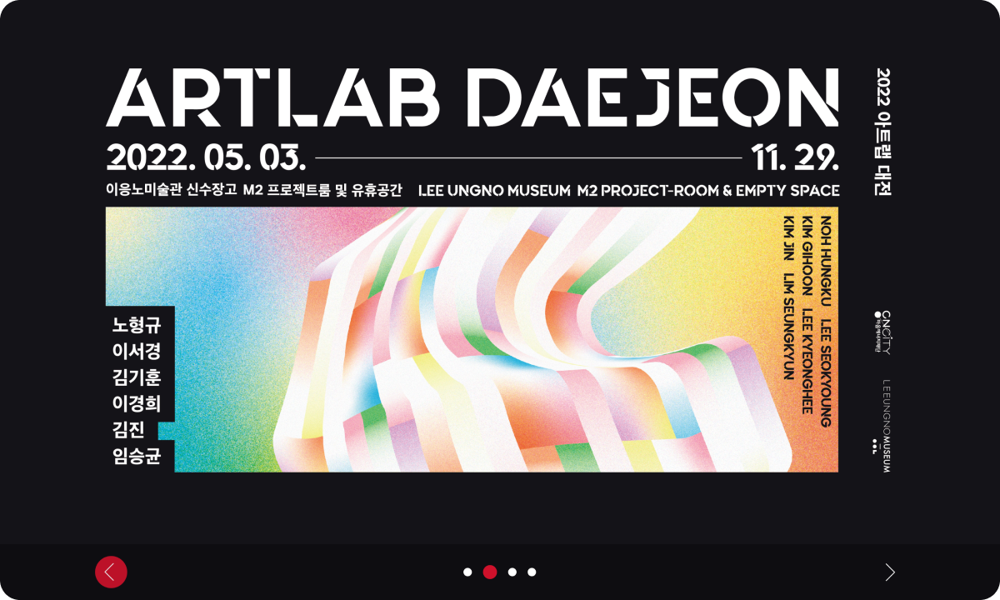

WEBSITE RENEWAL
LEEUNGNOMUSEUM
이응노미술관 웹 사이트 리뉴얼
작업기간
3주 2022.10
기여도
100%
사용툴
Figma / Photoshop / Illustrator
Overview
이번 웹 리뉴얼 프로젝트에서는
“이응노미술관만의 정적인 요소를 그대로 유지하면서 사이트
내에서 동적인 재미까지 느껴지게 해보자!”라는 목표를 설정한 후,
기존 사이트에서 느껴지는 아쉬운 점을 분석해서 그 부분을 개선함과 동시에, 이응노미술관이 보유한 다양한 콘텐츠들이 쉽게 노출될 수 있도록 재배치했습니다.
기존 사이트에서 느껴지는 아쉬운 점을 분석해서 그 부분을 개선함과 동시에, 이응노미술관이 보유한 다양한 콘텐츠들이 쉽게 노출될 수 있도록 재배치했습니다.

Before
기존 웹사이트의 아쉬운 점
- 정적인 느낌의 사이트 (재미 요소 X)
- 이응노미술관만의 디자인적인 특색 X
- 콘텐츠는 다양하지만, 우선순위가 불분명
After
이번 리뉴얼에서 개선한 점!
-
사이트의 액티브한 느낌을 위해
콘텐츠마다 동적인 효과를 추가 -
선과 여백을 활용해서
이응노미술관만의 특색을 살린,
갤러리 느낌의 깔끔한 디자인 -
메인화면의 콘텐츠 구성은 더 다양하게 하되,
복잡해 보이지 않는 선에서 각각의 콘텐츠가
잘 부각될 수 있게 재배치
Schedule
- 조사/기획부터 디자인 그리고 퍼블리싱까지 총 3주의 기간에 걸쳐 진행했습니다.
Concept
‘선’과 ‘비어있는 공간’을 활용한 디자인으로 순백의 갤러리 느낌을
극대화함으로써 이응노미술관만의 세련되고 정적인 분위기를
유지하면서
더 나아가, 그 정적인 분위기 안에서도 약간의 동적인 요소를 추가하여 내 시선(mouse cursor)을 따라 살아 움직이는 이응노미술관을 표현하고자 했습니다.
더 나아가, 그 정적인 분위기 안에서도 약간의 동적인 요소를 추가하여 내 시선(mouse cursor)을 따라 살아 움직이는 이응노미술관을 표현하고자 했습니다.
이응노미술관 로고에서 느껴지는 심플함을 토대로
선과 여백만으로 전반적인 디자인 요소를 최소화
선과 여백만으로 전반적인 디자인 요소를 최소화
이응노미술관의 컬러풀한 소장품을
디자인 포인트로 배치함으로써
갤러리 느낌을 극대화
디자인 포인트로 배치함으로써
갤러리 느낌을 극대화
Active point!
정적인 디자인으로 인해
지루하고 따분하게 느껴지지 않도록
동적인 요소를 추가
지루하고 따분하게 느껴지지 않도록
동적인 요소를 추가
#CF112B
#303030
#FFFFFF
#5F5D5D
#F3F4F5
color
블랙&화이트를 메인 컬러로 사용하여 심플하고 모던한 느낌을
강조하였으며
포인트 컬러인 레드를 통해 이응노미술관만의 세련된(?) 아이덴티티를 전달하고자 했습니다
포인트 컬러인 레드를 통해 이응노미술관만의 세련된(?) 아이덴티티를 전달하고자 했습니다
typography
이번 웹 리뉴얼에서는 리뉴얼 디자인에 반하지 않는 심플하고 깔끔한
고딕체를 메인 폰트의 기준으로 정하고,
웹 환경에서의 가독성을 최적화하기 위해 영문은 Roboto, 한글과 숫자는 Noto Sans KR로 구분해서 활용했습니다.
웹 환경에서의 가독성을 최적화하기 위해 영문은 Roboto, 한글과 숫자는 Noto Sans KR로 구분해서 활용했습니다.
노토산스KR
- 이응노미술관 웹 사이트 리뉴얼
- 이응노미술관 웹 사이트 리뉴얼
- 이응노미술관 웹 사이트 리뉴얼
Roboto
- WEB SITE RENEWAL
- WEB SITE RENEWAL
- WEB SITE RENEWAL
LEEUNGNOMUSEUM
website renewal
Epilogue
- 이응노미술관을 처음 방문했을 때를 떠올려 보면,
- 이응노 화백의 작품도 무척이나 매력적이지만 개인적으론 이응노미술관의 ‘공간’에 대한 기억이 더 좋았습니다.
- 화백과 혼연일체 된 것 같은 건축디자인은 또 다른 예술작품으로써 내게 다가왔고 그 ‘공간’에 있는 것만으로도 작품 속에 들어와 있는 기분이 들었습니다.
- 그 ‘공간’에서 느껴지는 ‘여백과 비움의 미학’은 지금도 기억해 낼 수 있을 만큼 생생합니다.
- 물론, 정적이면서 입체적이고 복합적인 분위기를 평면의 웹 화면에 표현하는 것은 애초에 어려운 일일 수도 있습니다.
- 그럼에도 불구하고 나는 이번 웹 리뉴얼 프로젝트를 통해 내가 그 ‘공간’에서 느꼈던 분위기를 담아내려 합니다.
- 조금이라도 그 느낌을 다른 이들과 함께 공유할 수만 있다면,
- 이번 프로젝트는 개인적인 의미에서 성공적이라고 말할 수 있을 것 같습니다.

Main slide 1
현재 미술관이 메인으로 홍보하는 전시 및 이벤트가 무엇인지 알 수 있게 화면에 꽉 찬 슬라이드를 전면에 배치
슬라이드 이미지에 최대한 집중할 수 있도록 내비게이션 바와 버튼은 마우스 클릭이 해당 위치에 닿았을 때 노출되도록 설정
슬라이드 이미지에 최대한 집중할 수 있도록 내비게이션 바와 버튼은 마우스 클릭이 해당 위치에 닿았을 때 노출되도록 설정
Mega menu
상단 왼편의 로고 교체를 통해서 헤더의 전체적인 세로 폭을 축소
하위 메뉴들의 가시성과 가독성을 높이기 위한, 메가 메뉴 내부 레이아웃 재구성
자바스크립트를 활용한 부드러운 동적 요소 추가
하위 메뉴들의 가시성과 가독성을 높이기 위한, 메가 메뉴 내부 레이아웃 재구성
자바스크립트를 활용한 부드러운 동적 요소 추가
Sub slide 1
재단 사업 중 하나인 지역 청년예술가 전시공간 지원에 대한, 지속적인 내부 노출이 필요하다고 판단
지나간 전시를 다시 확인할 수 있는 '대표작' 노출과 해당 지원 사업 페이지를 클릭하게끔 유도하는 ‘더 보기’ 추가
세로 슬라이드의 동적 움직임을 통해 페이지 전체적인 레이아웃의 지루함도 완화
지나간 전시를 다시 확인할 수 있는 '대표작' 노출과 해당 지원 사업 페이지를 클릭하게끔 유도하는 ‘더 보기’ 추가
세로 슬라이드의 동적 움직임을 통해 페이지 전체적인 레이아웃의 지루함도 완화
Card banner
나열식 단순 배치가 아닌 갤러리 느낌의 바둑판 형식의 레이아웃
디자인 포인트로 이응노미술관의 컬러 소장품 활용
간단한 hover 기능을 디자인적으로 접목시켜 동적 효과 UP
디자인 포인트로 이응노미술관의 컬러 소장품 활용
간단한 hover 기능을 디자인적으로 접목시켜 동적 효과 UP
Mini slide 1
이응노미술관만의 다양하고 세련된 디자인의 굿즈들을 좀 더 알리고자, 아트숍을 메인 페이지 전면에 노출
단순 굿즈 판매 페이지의 노출처럼 보이지 않게 전체적인 리뉴얼에 어울리는 디자인으로 배치
클릭하고 싶은 호기심을 유발하는 간단한 CSS 애니메이션 및 자바스크립트를 활용한 부드러운 동적 요소 추가
단순 굿즈 판매 페이지의 노출처럼 보이지 않게 전체적인 리뉴얼에 어울리는 디자인으로 배치
클릭하고 싶은 호기심을 유발하는 간단한 CSS 애니메이션 및 자바스크립트를 활용한 부드러운 동적 요소 추가
Card banner 1 / Css animation
구글 아트 앤 컬처에 이응노 화백 전용 페이지가 있는 것을 좀 더 확실하게 알리고자 카드 배너로 노출
‘hover’ 기능을 통한 동적 구현 이외에, 또 다른 재미 요소로써 구글 컬러를 활용한 css 애니메이션 추가
‘hover’ 기능을 통한 동적 구현 이외에, 또 다른 재미 요소로써 구글 컬러를 활용한 css 애니메이션 추가
Card banner 2
업데이트가 빈번한 소식/홍보 단락은 손쉽게 바로바로 확인이 가능한 슬라이드 형태로 배치
바둑판 형식의 레이아웃 안에서 hover 효과로 인한 시선 분산의 단점을 최소화하기 위해, hover 없이 고정 노출
바둑판 형식의 레이아웃 안에서 hover 효과로 인한 시선 분산의 단점을 최소화하기 위해, hover 없이 고정 노출

Sub slide 2
이 해외 지원 프로그램 역시 재단 사업 중 하나로, 지속적인 내부 노출이 필요하다고 판단
해당 페이지 내부의 이미지를 슬라이드로 메인에 노출시킴으로써 해당 페이지로의 클릭을 유도
해당 페이지 내부의 이미지를 슬라이드로 메인에 노출시킴으로써 해당 페이지로의 클릭을 유도
Main slide 2
기존 사이트에서 단순 카드 배너로 노출되어 있는 이벤트 및 행사를 좀 더 부각 시키기 위해 슬라이드 형태로 재배치
슬라이드 이미지에 최대한 집중할 수 있도록 내비게이션 바와 버튼은 마우스 클릭이 해당 위치에 닿았을 때 노출되도록 설정
메인 페이지 하단에 있지만 중요한 콘텐츠라는 것을 어필하기 위해 시선 집중이 가능한 포인트 컬러를 디자인에 활용
슬라이드 이미지에 최대한 집중할 수 있도록 내비게이션 바와 버튼은 마우스 클릭이 해당 위치에 닿았을 때 노출되도록 설정
메인 페이지 하단에 있지만 중요한 콘텐츠라는 것을 어필하기 위해 시선 집중이 가능한 포인트 컬러를 디자인에 활용
Background image + text
‘main slide 2’ 와 ‘footer’ 사이의 여백을 위한 장치로 주 배경색의 흰색에 가깝게 투명도 조절 후 배치
이응노미술관의 아이덴티티가 묻어나는 글귀를 함께 보여줌으로써 ‘공간’과 ‘여백’이 주는 미학을 다시 한번 강조.
이응노미술관의 아이덴티티가 묻어나는 글귀를 함께 보여줌으로써 ‘공간’과 ‘여백’이 주는 미학을 다시 한번 강조.
Footer
포인트 컬러와 어울리는 검정 계열로 배경을 설정하여 그 바로 위 단락과의 경계를 명확히 구분
어두운 계열이 가져다주는 무게감을 통해 페이지 끝을 확실히 알리는 역할뿐만 아니라 디자인의 역할까지 수행
푸터 내에서의 시각적인 균형을 위해 아이콘 형태로 sns 링크를 오른쪽에 배치한 후, hover 기능 추가
어두운 계열이 가져다주는 무게감을 통해 페이지 끝을 확실히 알리는 역할뿐만 아니라 디자인의 역할까지 수행
푸터 내에서의 시각적인 균형을 위해 아이콘 형태로 sns 링크를 오른쪽에 배치한 후, hover 기능 추가
끝까지 봐 주셔서 감사합니다.